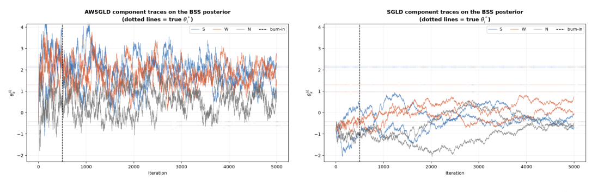
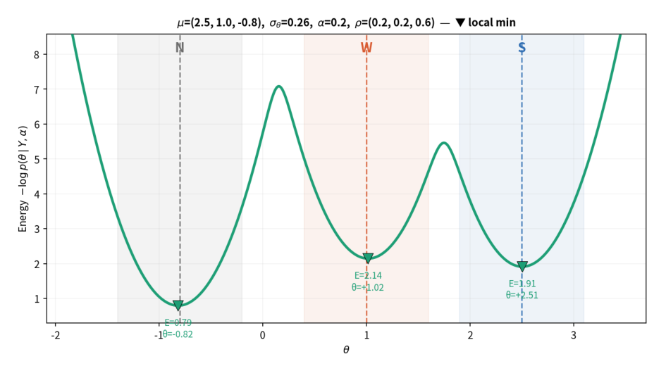
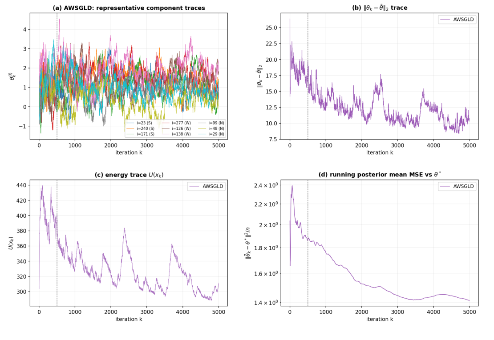
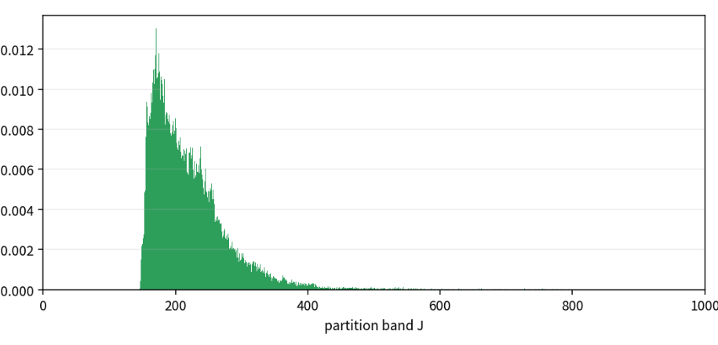
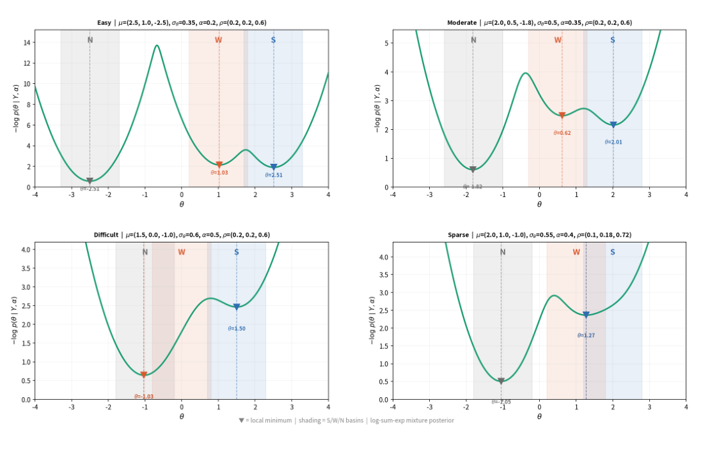
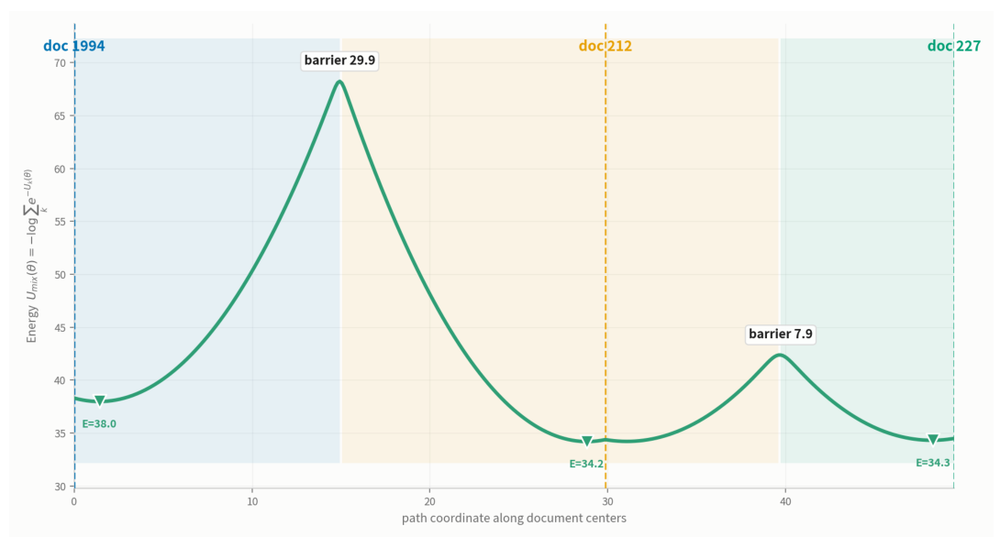
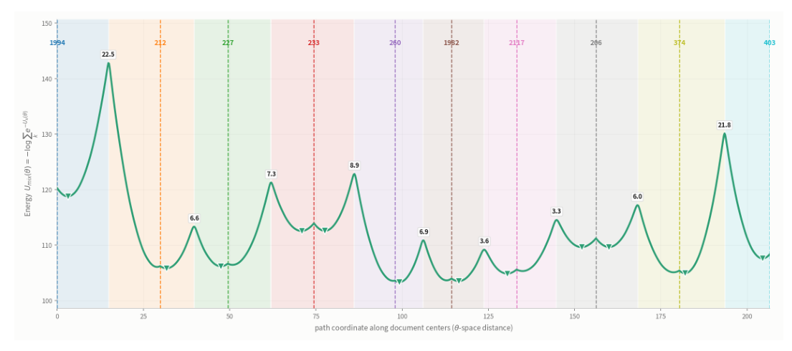

다봉 사후분포의 로컬 트랩을 깨는 그래프 preconditioned 적응형 샘플러.
BSS 키프레이즈 추출의 θ 샘플링 스텝만 AWSGLD로 교체 · 동일 데이터·동일 초기화 샘플러 6종 통제 비교 · 시뮬레이션 실험 4종 + Hulth 실데이터·실문서 트랩 검증 · 한국자료분석학회 포스터논문 장려상
문제 정의
- LDA 계열 토픽모델링의 두 가지 한계: 결과가 낱개 단어 목록으로 나오지만 사람이 문서를 대표하는 단위로 쓰는 것은 구(phrase), 그리고 완전 비지도라 현실에 일부만 존재하는 정답 라벨을 버림
- 이를 해결한 BSS(그래프 기반 준지도 키프레이즈 추출)는 사후분포 추론이 병목: 나쁜 초기값에서 출발하면 샘플러가 로컬 모드에 갇혀 신호가 있는 영역에 끝까지 도달하지 못하고, 결과가 초기값에 좌우됨
- 다봉성은 가정이 아니라 구성해 확인한 사실: 실문서 10편을 병합한 사후분포 지형에서 에너지 장벽 3.3~22.5로 분리된 10개 모드를 확인
알고리즘 설계
| 검토안 | 내용 | 판단 |
|---|---|---|
| 1안. 키프레이즈 추출 모델 신규 설계 | 구절 단위 처리와 부분 라벨 활용을 전부 재구현. 성능 개선이 샘플러 덕분인지 모델 덕분인지 분리 불가 | 기각 |
| 2안. BSS 유지 + θ 샘플링 스텝만 AWSGLD로 교체 | 그래프 구조·PU Learning 등 모델은 그대로 두고 변경점을 샘플러 하나로 최소화해 개선 효과를 샘플러에 귀속 | 채택 |
- 그래프 preconditioning P = (BᵀB)⁻¹ · 단어 공출현 그래프의 기하를 기울기에 반영. 에너지 장벽을 넘는 탈출의 1차 요인
- 에너지 파티션 적응 가중(flat-histogram) · 자주 방문한 저에너지 구간을 점진적으로 up-weight해 샘플러가 보는 지형 자체를 평탄화. 탈출 이후 혼합 효율의 2차 요인이며, 파티션이 1차원 에너지 축에 걸리므로 모드 수가 차원과 함께 폭증해도 비용이 늘지 않는 구조
비교 샘플러 6종 · 동일 데이터·동일 초기화 통제
| 샘플러 | 전략 |
|---|---|
| acMH-within-Gibbs | 원논문(Wang et al. 2023) 기본. (BᵀB)⁻¹·σ² 제안 + MH 수락 |
| SGLD | 바닐라 확률적 경사 랑주뱅 |
| qSGLD | (BᵀB)⁻¹ preconditioning + 상관 노이즈 |
| cycSGLD | 주기적 학습률 + 2단계 온도 |
| SGHMC | 보조 운동량 + 마찰항으로 미니배치 노이즈 상쇄 |
| AWSGLD (제안) | 그래프 preconditioning + 에너지 파티션별 적응 가중으로 모드 간 장벽 평탄화 |
실험 설계
실험 1 · 원본 BSS 사후분포 비교
아무 조작 없는 실제 목표 분포에서 6종을 데이터 기반 에너지 컷오프(U ≤ 312) 도달 여부·수렴·효율로 비교
실험 2 · 다봉 트랩 탈출과 메커니즘 진단
3모드 혼합 타깃(p=400)을 주입하고 일부러 가장 나쁜 초기값(null basin)에서 출발시켜 탈출 여부와 혼합 품질을 측정, 에너지 파티션 1,000개의 방문 프로파일로 flat-histogram 재가중이 설계대로 동작하는지까지 확인
실험 3 · 난이도 4시나리오
Easy부터 Sparse까지 난이도를 4단계로 조절한 합성 그래프에서 같은 조건으로 3회 반복 비교
실험 4 · 규모 확장
n=200에서 10,000까지 50배 키우며 시드 5개 평균·3체인 pooled 평가로 규모에 따른 안정성 확인
실험 5 · 실데이터 Hulth 벤치마크
초록 500편에서 FDR 컷오프 기반 키프레이즈 선택의 품질과 캘리브레이션(실현 FDR)을 검증
실험 6 · 실문서 병합 트랩
어휘 겹침이 낮은 Hulth 실문서 3편·10편을 병합해 다봉 지형을 실데이터로 직접 구성하고, 시뮬레이션의 탈출 능력이 재현되는지 확인
- 지표는 복원(MSE·Spearman·NDCG)과 수렴·효율(R̂·ESS·Cost/ESS), 선택 품질(F@k·실현 FDR)을 분리해 측정
결과
원본 사후분포에서 6종 중 유일하게 전 성분 수렴(R̂ < 1.2)하며 ESS 26.4로 차선의 2배 · 10문서 실데이터 트랩에서 10개 모드 중 평균 7.4개 방문(차선 1.8) · 한국자료분석학회 포스터논문 장려상 (2026.06)
실험 1 · 원본 사후분포: 에너지 축은 동점, 효율이 가른다

| 샘플러 | 최저 에너지 U | 컷오프 도달 | ESS |
|---|---|---|---|
| acMH | 312 | 5/5 | 7.6 |
| SGLD | 352 | 0/5 | 5.6 |
| qSGLD | 312 | 4/5 | 13.1 |
| cycSGLD | 312 | 5/5 | 4.7 |
| SGHMC | 351 | 0/5 | 7.3 |
| AWSGLD (제안) | 312 | 5/5 | 26.4 |
- 컷오프에 도달한 4종은 에너지 축에서 정확히 동점(논문 Table 1). 순위를 가르는 것은 효율로, AWSGLD만 R̂ < 1.2 수렴과 ESS 26.4(차선 qSGLD 13.1의 2배)를 동시에 달성. 강신호 노드 도달도 80/80으로 유일하게 전원 복원
실험 2 · 트랩 탈출과 메커니즘: null basin에서 신호 모드까지


| 샘플러 | R̂ max | Spearman | MSE |
|---|---|---|---|
| acMH | 1.78 | 0.026 | 2.282 |
| SGLD | 10.21 | 0.166 | 2.620 |
| qSGLD | 1.37 | 0.648 | 2.068 |
| cycSGLD | 5.09 | 0.692 | 1.272 |
| SGHMC | 4.50 | 0.390 | 1.704 |
| AWSGLD (제안) | 1.15 | 0.697 | 1.382 |
- 장벽을 넘어 체인이 합의에 이르는 것은 preconditioner를 쓰는 qSGLD·AWSGLD뿐이고(논문 Table 3), 그중 AWSGLD만 전 성분 수렴(R̂ max 1.15)과 최고 순위 복원(Spearman 0.697)을 동시 달성. 운동량만 더한 SGHMC는 그래프 기하를 못 쓰므로 여전히 실패
- cycSGLD의 MSE 1.272는 표면상 최저지만 R̂ 5.09로 미수렴 상태의 single-chain lucky. 수렴하지 않은 추정치는 신뢰할 수 없음을 함께 보고

- 자주 방문한 저에너지 밴드가 점진적으로 up-weight되어 체인이 고에너지 밴드로 반복 복귀. 샘플러가 보는 유효 지형이 실제로 평탄화되고 있음을 방문 프로파일로 직접 확인
실험 3 · 난이도 4시나리오: 어려울수록 벌어지는 격차

| Difficult 조건 | Spearman | NDCG@k | Top-k | 시간(초) |
|---|---|---|---|---|
| SGLD | 0.093 | 0.564 | 0.366 | 16.0 |
| qSGLD | 0.327 | 0.715 | 0.501 | 16.6 |
| cycSGLD | -0.556 | 0.337 | 0.061 | 16.9 |
| SGHMC | 0.003 | 0.538 | 0.336 | 20.2 |
| acMH | 0.059 | 0.567 | 0.370 | 707.3 |
| AWSGLD (제안) | 0.553 | 0.822 | 0.637 | 16.3 |
- 4시나리오 전부에서 Spearman·NDCG·Top-k 1위(논문 Table 4). 난이도가 올라갈수록 격차가 확대되어 Difficult·Sparse에서 비교군은 순위 상관이 0 또는 음수로 붕괴. 유사 정확도 계열인 acMH와는 벽시계 707초 vs 16초로 약 43배 격차
실험 4 · 규모 확장: n=200 → 10,000
| n=10,000 | MSE | Spearman | R̂ max | ESS 중앙값 | Cost/ESS |
|---|---|---|---|---|---|
| SGLD | 2.803 | 0.215 | 7.52 | 6.9 | 469.5 |
| qSGLD | 1.719 | 0.748 | 2.11 | 9.7 | 348.4 |
| cycSGLD | 1.784 | 0.754 | 1.09 | 40.4 | 81.0 |
| SGHMC | 2.084 | 0.679 | 2.80 | 8.3 | 389.3 |
| AWSGLD (제안) | 1.251 | 0.757 | 1.09 | 63.1 | 56.9 |
- 규모 50배 확장에도 MSE는 차선 대비 30~40% 낮고 R̂ ≤ 1.09 유지, ESS는 전 규모에서 자릿수 우위(논문 Table 5). 에너지 파티션이 1차원 축에 걸리는 차원 무관 구조라 모드 수가 폭증해도 평탄화 비용이 늘지 않는 것이 원인
실험 5 · Hulth 실데이터: FDR 컷오프 선택 품질
| pooled F (γ) | acMH | SGLD | qSGLD | cycSGLD | SGHMC | AWSGLD |
|---|---|---|---|---|---|---|
| 0.15 | 0.437 | 0.519 | 0.476 | 0.426 | 0.511 | 0.525 |
| 0.20 | 0.530 | 0.566 | 0.566 | 0.526 | 0.564 | 0.613 |
| 0.25 | 0.626 | 0.606 | 0.639 | 0.617 | 0.611 | 0.694 |
| 0.30 | 0.687 | 0.642 | 0.691 | 0.685 | 0.647 | 0.731 |
- 단일 문서 사후분포는 단봉에 가까워 기준선 acMH에게 가장 유리한 조건인데도, pooled F는 γ=0.10을 제외한 전 수준 1위(논문 Table 7). 실현 FDR은 acMH와 같은 수준으로 유지되어(0.061 vs 0.043 at γ=0.05), 우위가 모드 탈출이 아니라 넓은 탐색에 의한 재현율 개선임을 확인
실험 6 · 실문서 병합 트랩: 시뮬레이션의 재현


| 10문서 트랩 | 방문 basin | 탈출률 | P@20 | NDCG@20 |
|---|---|---|---|---|
| AWSGLD (제안) | 7.4 / 10 | 100% | 0.945 | 0.945 |
| SGHMC | 1.5 | 100% | 0.875 | 0.894 |
| qSGLD | 1.8 | 100% | 0.855 | 0.882 |
| SGLD | 1.6 | 100% | 0.810 | 0.827 |
| cycSGLD | 1.3 | 60% | 0.800 | 0.849 |
| acMH | 1.1 | 20% | 0.810 | 0.833 |
- 3문서 트랩(장벽 약 30): AWSGLD만 100% 탈출 + 평균 2.2개 basin 방문으로 P@20 0.745 vs acMH 0.555, NDCG@20 0.806 vs 0.661. acMH는 γ ≥ 0.15에서 실현 FDR이 명목 수준을 초과(0.306 at γ=0.20)하는 반면 AWSGLD는 전 구간 준수
- 10문서 트랩: 10개 basin 중 평균 7.4개 방문(차선 1.8)으로 전 지표 1위(논문 Table 12). basin이 많아질수록 격차가 커지는 방향성 확인
- 정직한 한계 보고: 3문서 트랩의 낮은 γ에서는 한 basin에 갇힌 acMH의 소수 정예 선택이 컷오프 F 기준으로 더 높음(0.465 vs 0.365 at γ=0.10). 상위 후보 추출·FDR 보증 관점에서만 AWSGLD 우위가 성립함을 구분해 기록
세부 기록
사용 기술 · Python(NumPy·Numba)·R / SGMCMC(AWSGLD·SGLD·qSGLD·cycSGLD·SGHMC) / 그래프 기반 NLP · PU Learning / Hulth 벤치마크 전처리(POS 필터·window-2 공출현 그래프)
공정 비교 · 기준선 acMH를 Numba + O(n) 증분 계산으로 가속해 동일 조건 비교. 모든 실험은 동일 데이터·동일 초기화·동일 온도로 통제
검증 태도 · cycSGLD의 single-chain lucky(R̂ 5.09인데 MSE 1위) 같은 이상 사례를 3체인 pooled 추정으로 교정하니 정상 경쟁자로 복귀, 이전 우위가 추정기 인공물이었음을 규명. n=10,000은 단일 시드(1체인 약 1시간) 한계도 명시
자료
BSS-AWSGLD 키프레이즈 추출 · 학회 포스터 (장려상)https://github.com/hjiyun/BSS-Keyphrase-Extraction · 실험별 상세 보고서(docs/simulation)와 재현 코드 전체 공개